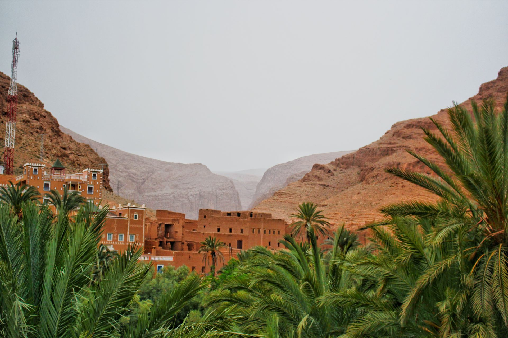
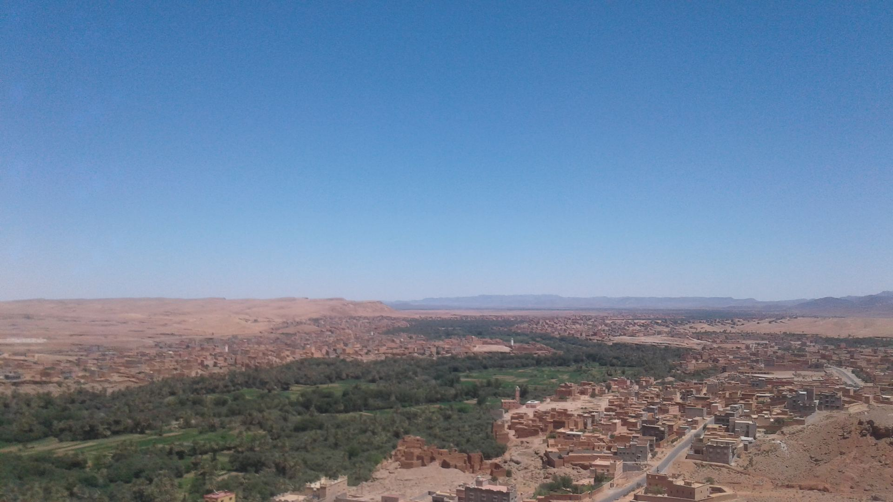
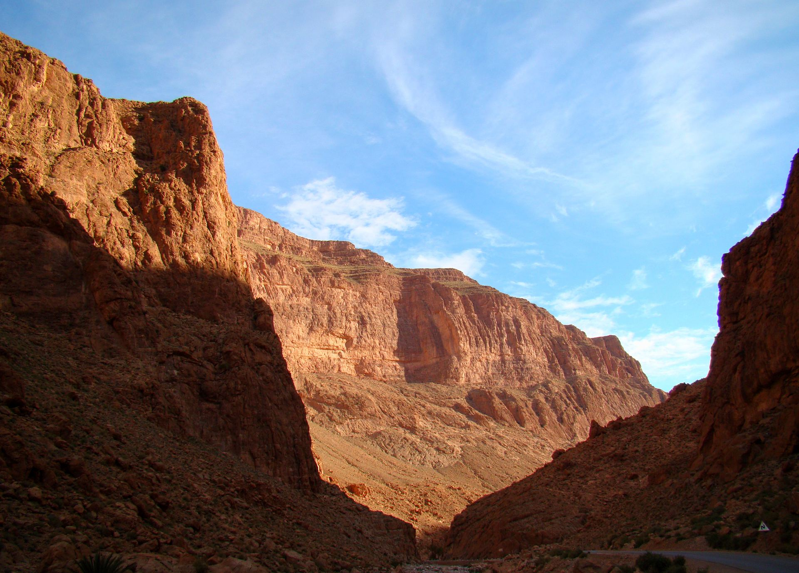
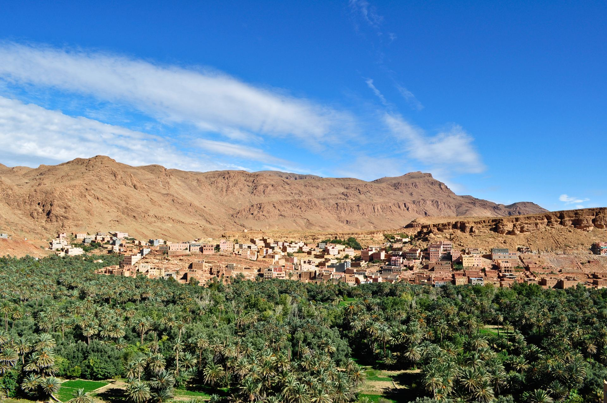
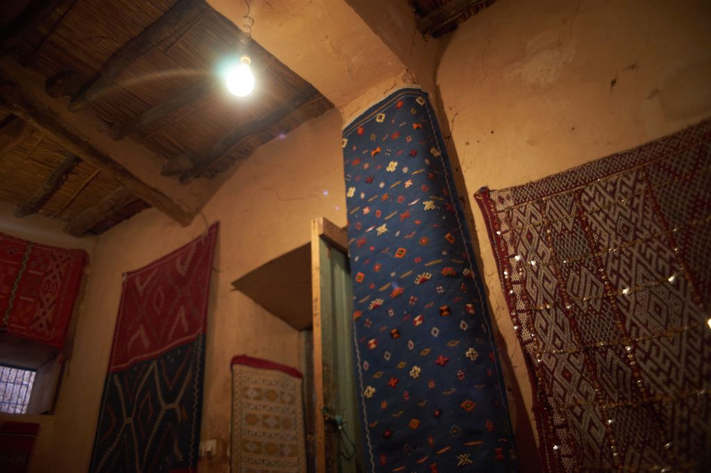
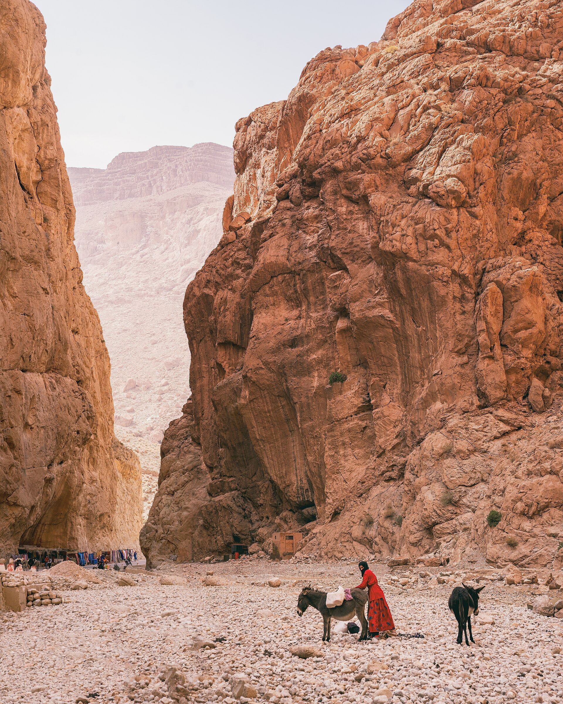

Visual Journey
Experience the stunning landscapes and cultural richness of Tineghir through these artistic impressions.



Photo: Bjørn Christian Tørrissen, CC BY-SA 3.0, via Wikimedia Commons

Photo: Elena Tatiana Chis, CC BY-SA 4.0, via Wikimedia Commons

Photo: Rodrigo Silva, CC BY 2.0, via Wikimedia Commons

Photo: Mrinal Mohit, CC BY-SA 4.0, via Wikimedia Commons
Community photos credited in captions — full source pages and licenses in assets/SOURCES.md.